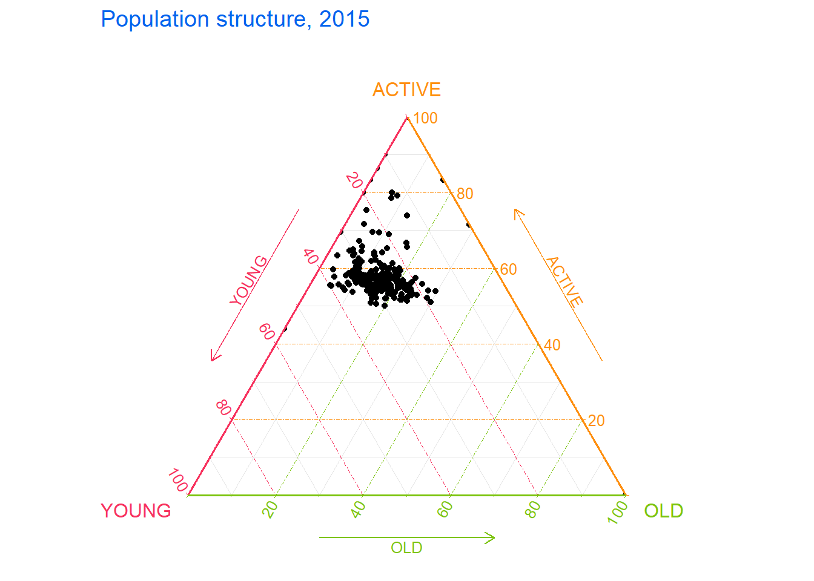

Code
pacman::p_load(plotly, ggtern, tidyverse)Visual Multivariate Analysis
Ternary plots are a way of displaying the distribution and variability of three-part compositional data. (For example, the proportion of aged, economy active and young population or sand, silt, and clay in soil.) It’s display is a triangle with sides scaled from 0 to 1. Each side represents one of the three components. A point is plotted so that a line drawn perpendicular from the point to each leg of the triangle intersect at the component values of the point.
R packages for Ternary Diagram
pacman::p_load(plotly, ggtern, tidyverse)For the purpose of this hands-on exercise, the Singapore Residents by Planning AreaSubzone, Age Group, Sex and Type of Dwelling, June 2000-2018 data will be used.
To important respopagsex2000to2018_tidy.csv into R, read_csv() function of readr package will be used.
#Reading the data into R environment
pop_data <- read_csv("data/respopagsex2000to2018_tidy.csv") Before we make any changes, let us examine the data table.
head(pop_data,5)# A tibble: 5 × 5
PA SZ AG Year Population
<chr> <chr> <chr> <dbl> <dbl>
1 Ang Mo Kio Ang Mo Kio Town Centre AGE0-4 2011 290
2 Ang Mo Kio Ang Mo Kio Town Centre AGE0-4 2012 270
3 Ang Mo Kio Ang Mo Kio Town Centre AGE0-4 2013 260
4 Ang Mo Kio Ang Mo Kio Town Centre AGE0-4 2014 250
5 Ang Mo Kio Ang Mo Kio Town Centre AGE0-4 2015 260summary(pop_data) PA SZ AG Year
Length:108126 Length:108126 Length:108126 Min. :2000
Class :character Class :character Class :character 1st Qu.:2004
Mode :character Mode :character Mode :character Median :2009
Mean :2009
3rd Qu.:2014
Max. :2018
Population
Min. : 0.0
1st Qu.: 0.0
Median : 140.0
Mean : 644.1
3rd Qu.: 800.0
Max. :14560.0 str(pop_data)spc_tbl_ [108,126 × 5] (S3: spec_tbl_df/tbl_df/tbl/data.frame)
$ PA : chr [1:108126] "Ang Mo Kio" "Ang Mo Kio" "Ang Mo Kio" "Ang Mo Kio" ...
$ SZ : chr [1:108126] "Ang Mo Kio Town Centre" "Ang Mo Kio Town Centre" "Ang Mo Kio Town Centre" "Ang Mo Kio Town Centre" ...
$ AG : chr [1:108126] "AGE0-4" "AGE0-4" "AGE0-4" "AGE0-4" ...
$ Year : num [1:108126] 2011 2012 2013 2014 2015 ...
$ Population: num [1:108126] 290 270 260 250 260 250 200 180 290 290 ...
- attr(*, "spec")=
.. cols(
.. PA = col_character(),
.. SZ = col_character(),
.. AG = col_character(),
.. Year = col_double(),
.. Population = col_double()
.. )
- attr(*, "problems")=<externalptr> Next, use the mutate() function of dplyr package to derive three new measures, namely: young, active, and old.
#Deriving the young, economy active and old measures
agpop_mutated <- pop_data %>%
mutate(`Year` = as.character(Year))%>%
pivot_wider(names_from = AG, values_from = Population) %>%
mutate(YOUNG = rowSums(.[4:8]))%>%
mutate(ACTIVE = rowSums(.[9:16])) %>%
mutate(OLD = rowSums(.[17:21])) %>%
mutate(TOTAL = rowSums(.[22:24])) %>%
filter(Year == 2018)%>%
filter(TOTAL > 0)What did code chunk above do?
characterpivot_wider() (replace spread()) to widens datarowSums()agpop_mutated# A tibble: 234 × 25
PA SZ Year `AGE0-4` `AGE10-14` `AGE15-19` `AGE20-24` `AGE25-29`
<chr> <chr> <chr> <dbl> <dbl> <dbl> <dbl> <dbl>
1 Ang Mo Kio Ang Mo… 2018 180 320 300 260 300
2 Ang Mo Kio Cheng … 2018 1060 1080 1260 1400 1880
3 Ang Mo Kio Chong … 2018 900 1030 1220 1380 1760
4 Ang Mo Kio Kebun … 2018 720 1010 1120 1230 1460
5 Ang Mo Kio Sembaw… 2018 220 380 500 550 500
6 Ang Mo Kio Shangr… 2018 550 670 780 950 1080
7 Ang Mo Kio Tagore 2018 260 430 500 640 690
8 Ang Mo Kio Townsv… 2018 830 930 860 1020 1400
9 Ang Mo Kio Yio Ch… 2018 160 220 260 350 340
10 Ang Mo Kio Yio Ch… 2018 810 1300 1450 1500 1590
# ℹ 224 more rows
# ℹ 17 more variables: `AGE30-34` <dbl>, `AGE35-39` <dbl>, `AGE40-44` <dbl>,
# `AGE45-49` <dbl>, `AGE05-9` <dbl>, `AGE50-54` <dbl>, `AGE55-59` <dbl>,
# `AGE60-64` <dbl>, `AGE65-69` <dbl>, `AGE70-74` <dbl>, `AGE75-79` <dbl>,
# `AGE80-84` <dbl>, AGE85over <dbl>, YOUNG <dbl>, ACTIVE <dbl>, OLD <dbl>,
# TOTAL <dbl>Instead of long and thin, now the data table is fat and short!
ggtern()Use ggtern() function of ggtern package to create a simple ternary plot.
# Building the static ternary plot
ggtern(data=agpop_mutated,aes(x=YOUNG,y=ACTIVE, z=OLD)) +
geom_point()
# Building the static ternary plot
ggtern(data=agpop_mutated, aes(x=YOUNG,y=ACTIVE, z=OLD)) +
geom_point() +
labs(title="Population structure, 2015") +
theme_tropical() # ggtern_themes
Refer to this link for more ggtern themes.
plot_ly()The code below create an interactive ternary plot using plot_ly() function of Plotly R.
# reusable function for creating annotation object
label <- function(txt) {
list(
text = txt,
x = 0.1, y = 1,
ax = 0, ay = 0,
xref = "paper", yref = "paper",
align = "center",
font = list(family = "serif", size = 15, color = "white"),
bgcolor = "#b3b3b3", bordercolor = "black", borderwidth = 2
)
}
# reusable function for axis formatting
axis <- function(txt) {
list(
title = txt, tickformat = ".0%", tickfont = list(size = 10)
)
}
ternaryAxes <- list(
aaxis = axis("Young"),
baxis = axis("Active"),
caxis = axis("Old")
)
# Initiating a plotly visualization
plot_ly(
agpop_mutated,
a = ~YOUNG,
b = ~ACTIVE,
c = ~OLD,
color = I("lightblue"),
type = "scatterternary"
) %>%
layout(
annotations = label("Ternary Markers"),
ternary = ternaryAxes
)